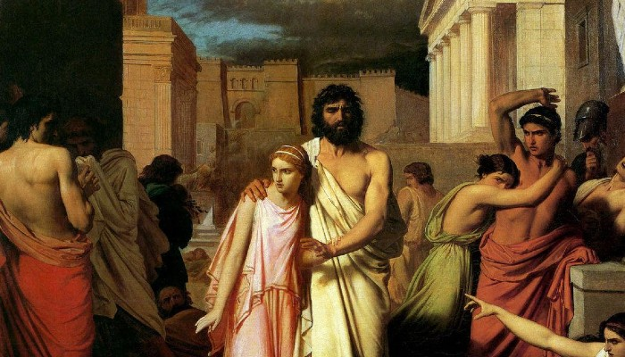

Tragico suceso se da en el reino
Asesinan al Rey de Tebas
El deceso del Rey de Tebas se dio el día 09 de agosto de 2022 en el cruce hacia el Oráculo, según se reporta desde el palacio central no se tiene claro el ejecutor del suceso, quien además asesino al clérigo y a 4 soldados más, aparentemente el suceso se dio debido al deseo de no ceder el paso del asesino, que llevo al clérigo a matar a uno de sus caballo, lo que desato la ira del mismo matando al clérigo, a 4 soldaos y al Rey de Tebas, palacio central ofrece una recompensa monetaria para quien brinde información del suceso.